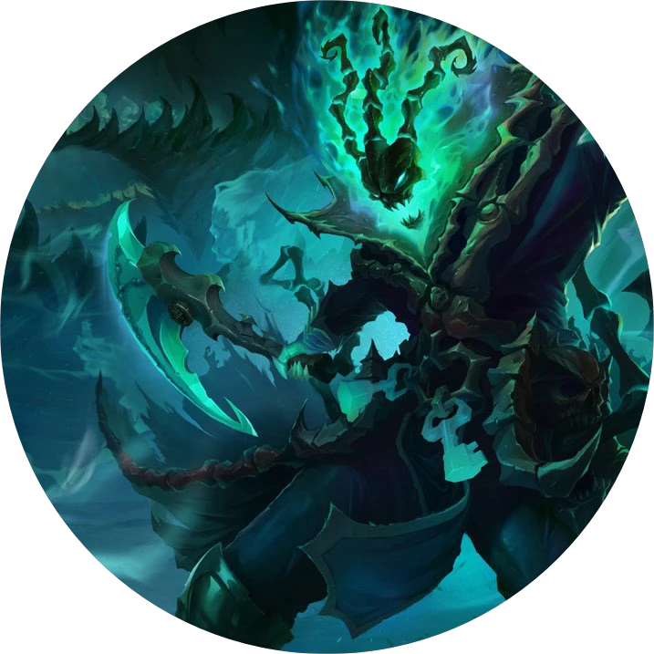

锁链划过地面的骇人声响回荡在荒野中。野外，一团非自然形成的迷雾将月亮和星星的光芒掩盖，平日里鸣叫的昆虫现在也变得异常安静。
锤石来到一间破败不堪的窝棚前。他举起灯笼，不是为了照亮四周，而是为了看清灯笼里面。灯笼内部就像一片闪烁的星空，上千颗绿色的小球在闪烁。他们疯狂地飞舞起来，似乎是想躲避锤石的目光。他的嘴角泛起一抹异样的诡笑，露出闪光的尖牙。每一颗颗星光都是他的宝贝。
窝棚门后，一个人正在啜泣。锤石感知到了他的痛苦，因此被吸引过来。他十分理解这个人的苦痛，就像他的老朋友一样。
锤石只曾在这个人面前出现过一次，那是数十年前了，但从那以后，这名幽灵就开始不断地夺走这个男人的至亲至爱：从他的爱马到他的母亲，兄长，一直到最近一位让他推心置腹的佣人。这名幽灵从不会将他们的离世伪装成自然死亡；他要让这个人知道是谁在为他制造痛苦。
这名幽灵穿过窝棚的门，锁链拖在身后。窝棚里面阴暗潮湿，积攒了数年的污垢。这个人看上去比这间窝棚的状态还糟：他蓬头垢面，身上布满了脓包——长势凶恶，有的刚被抓破。他穿的衣服原本是名贵的天鹅绒，但现在只剩下破烂的碎布。
这个人看到突然出现的绿色荧光，惊恐地缩成一团，手捂住眼睛。他的身体剧烈地摇晃着，向角落退去。
“拜托。拜托，别是你。”他低声说道。
“很久以前，我认定了你。”锤石的声音尖锐刺耳，就像是一副数年未说过一句话的嗓子。
“现在我来收魂了…”
“我就要死了。”这个人说道，他的声音小得几乎听不到。“如果你是来杀我的，你最好抓紧。”他鼓起勇气直视锤石。
锤石咧嘴大笑。“我不想要你的死亡。”
他将灯笼的玻璃门微微敞开，里面传出了奇异的声音——由尖叫组成的不和谐音。
那个人一开始并没有任何反应。同时有太多的尖叫声，混合到一起就像碾碎玻璃渣滓的声音一样刺耳。但随后他就惊恐地睁大了双眼，因为他听到了自己认识的声音从锤石的灯笼里传出。他听到了自己的母亲，兄长，朋友，最后他听到了最可怕的声音：他的孩子们，似乎是在被活活烧死时发出的哀嚎。
“你都做了什么？”他尖叫着说。他胡乱地从手边捡起一样东西——是一把坏掉的凳子——然后用尽全身力气把它丢向锤石。凳子没有击中任何东西，穿过了幽灵的身体，锤石开始阴森地大笑。
那个人跑向锤石，眼睛里充满怒火。那名幽灵甩出了锁链，铁钩像毒蛇出击一样飞出。倒刺的铁钩刺入了凡人的胸膛，击碎了肋骨，击穿了心脏。那个人跪倒在地，脸上的痛苦表情让锤石感到无比美味。
“我为了保护他们才离开了他们。”那个人哭着说。鲜血从嘴里涌出。
锤石用力扭转锁链。一开始，那个人一动没动。随后他开始被撕裂。就像一块粗布被一行行抽丝一样，他遭受着剧痛，一点点从自己的身体中被抽离。他的身体在剧烈抽动，血浆溅满了墙壁。
“现在，我们开始。”锤石说。他拖着被钩住的灵魂，灵魂在铁链的另一端闪烁着明亮的幽光，随后被囚禁在了灯笼里。那个人的尸体瘫倒在地，锤石离开了。
锤石随着卷曲翻腾的黑雾离开了窝棚，一路上高高地举着自己的灯笼。直到锤石消失得无影无踪、迷雾烟消云散以后，虫儿才恢复了夜晚的鸣唱，星星也重新布满了夜空。
